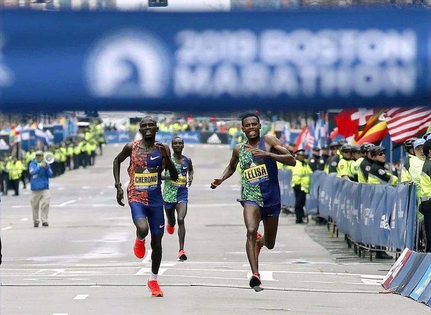

Pacing in endurance events is often characterised by an increase in power output or running speed towards the end, a behaviour termed the end spurt. This blog post examines the prevalence of such occurrence in Singaporean male and female runners during the Standard Chartered Singapore Marathon (SCSM) 2019.

The End Spurt
In the 2019 Boston Marathon, the fight for the first position in the men’s event came down to an epic sprint battle between Lawrence Cherono and Lelisa Desisa. Eventually, the winner and runner-up of an arduous 42.195 km race were separated by merely two seconds. The behaviour of increasing power output or running speed towards the end of an exercise bout is known as an end spurt. Such pacing behaviour is commonly observed in endurance events among both elite and recreational runners.
This observation has been of interest to sport scientists as it challenges the notion of fatigue. In an endurance event such as the marathon, it is expected that runners usually slow down as the distance progresses due to increase in fatigue levels. Thus, it is paradoxical that runners are able to speed up near the finish line when they are supposed to be the most fatigued. An explanation of such paradox is that individuals always exercise with reserves and regulate exercise in an anticipatory manner. As suggested in the central governor theory by renowned sport scientist, professor Timothy Noakes, anticipation is a critical component of exercise regulatory behaviour to avoid any catastrophic event happening during exercise.
Is such pacing behaviour exhibited by all runners?
My previous blog post has examined the pace variation of Singaporean male and female runners of different levels who completed SCSM 2019. Using the same scraped data (see web scraping code here), this blog post examined the prevalence of the end spurt in both gender groups, and comparison was made among three groups of runners: fast, mid-pack and slow. The fast group represents the upper 20th percentile, the mid-pack consists of runners between the 40th and 60th percentile, and the slow group is made up of runners from the lower 20th percentile.
First, let’s visualise the pacing profiles of each group of runners over the marathon distance, separated by gender. As illustrated in the figure above, the pacing profiles look quite similar across different groups. The observed pattern is characterised by an expected decrease in speed progressively over the course of the race. Interestingly, that is followed by an increase in speed right at the end of the race (last 2.195 km), demonstrating the end spurt behaviour. This seems to suggest that such behaviour can be observed in most runners regardless of their performance levels.
To examine the prevalence of the end spurt, change in average speed between the last section and the average time split at 40 km was first computed. A positive change in speed means that runners ran faster during the last section as compared to their 40 km time splits, and a negative change in speed implies slowing down instead. As shown in the box plots above, the lower quartile is more than zero, indicating a positive change in speed was found in more than 75% of runners in both gender groups. Specifically, 88% of female runners and 86% of male runners increased their speed during the last 2.195 km of the marathon. This demonstrates that the end spurt behaviour was observed in majority of runners.
While the pacing profiles above suggest that the end spurt behaviour was observed in all levels of runners, the degree of end spurt may differ between the groups. The figure above presents the change in speed as a percentage of the runners’ 40 km time split. Statistical analysis (one-way ANOVA and post-hoc pairwise comparisons) revealed that only the slow group differed from the other two groups for both genders. For the male runners, the increase in speed among the slower runners (8.05%) was significantly less than the mid-pack (12.88%) and the faster runners (13.05%). Similarly, for the female runners, the slow group (8.55%) sped up significantly less than the mid-pack (12.82%) and the fast group (11.44%). This suggests that better performing runners tend to speed up more than their slower peers during the last section of a marathon.
Anticipation and Uncertainty
These findings demonstrated that the end spurt behaviour in a marathon was highly prevalent among runners. Given that such behaviour was exhibited regardless of gender and performance levels, it has certainly interest me to further think about this phenomenon.
Is the end spurt an innate manner of regulating endurance exercise?
As mentioned earlier, a plausible explanation behind such phenomenon is that humans always exercise in an anticipatory manner. In most exercise settings, we are aware of the end point, be it expected distance or duration. Naturally, we want to reach this end point optimally and also safely as well. In the context of a marathon race, the performance goal is to reach the finish line as fast as possible. To achieve this, an athlete not only has to run at a fast pace, but also a sustainable one as well. In reality, this is a very challenging task because sustainability of pace is usually uncertain in an endurance event. This is supported by the variation in marathon running pace shown in my previous blog post. However, this uncertainty diminishes with increasing proximity to the end point. For example, an athlete at the 10 km mark will be less confident of sustaining a given pace as compared to the athlete at 40 km instead. Rationally, an athlete will not select a pace that is knowingly unsustainable as that will be detrimental to performance. Therefore, it makes sense that individuals are only inclined to increase their pace when they know they are near to the finish line.
Comparison between different groups of runners showed us that better performing runners exhibited greater end spurts as compared to the slowest group. This either implies that 1) better runners were more conservative in their pacing and hence has greater reserve capacities to tap on for the final push, or 2) better runners were able to dig deeper than their slower counterparts and thus greater ability to speed up.
In summary, the end spurt is ubiquitous in an endurance event such as the marathon. It remains unclear why most individuals exhibit such behaviour. The next time you find yourself speeding up near the end of an exercise bout, I hope you can share with me your rationale behind it!
Data processing, analysis and visualisation were performed on R. Full code and datasets can be found here.